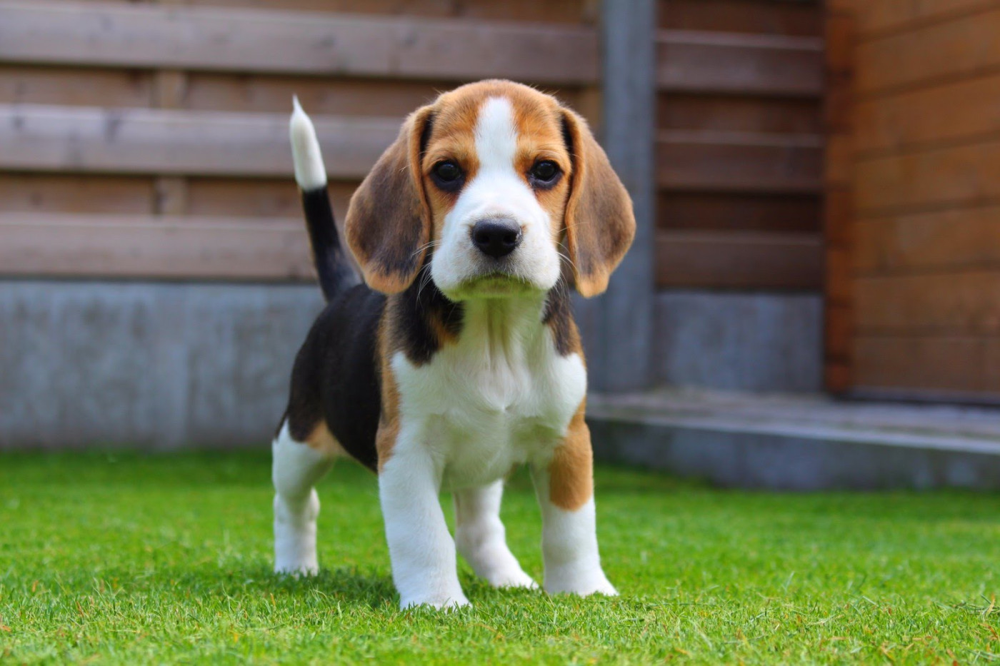

Pet Channel
| บีเกิล (Beagle) |
|  |
ลักษณะทั่วไป บางตัวสูงประมาณ 13 นิ้ว และมีน้ำหนักประมาณ 18 ปอนด์ (8 กิโลกรัม) ขนาดกลุ่มที่สองคือสูงประมาณ 13-15 นิ้วและมีน้ำหนักประมาณ 20 ปอนด์ (9 กิโลกรัม) บีเกิ้ลมีกล้ามเนื้อ แข็งแกร่ง และมีกะโหลกศีรษะโดมเล็กน้อย ปากพวกเขาเป็นสี่เหลี่ยมและจมูกกว้าง หูมีความยาวและห้อย หน้าอกอยู่ลึก หลังตรงและพวกเขามีหางยาวปานกลางตั้งสูง สุนัขพันธุ์นี้มีขนเรียบหนาแน่นโดยมักจะเป็นสีดำ สีน้ำตาล และสีขาว บีเกิ้ลได้รับการยอมรับอย่างกว้างขวางว่าทำดีกับสัตว์เลี้ยงอื่นๆ และเด็ก พวกเขาเป็นสุนัขที่ร่าเริงที่ชอบความรัก พวกเขาชอบที่จะมีเพื่อน อย่างไรก็ตาม หากปล่อยทิ้งไว้เพียงอย่างเดียวอาจจะเห่าหอนและซุกซน ตามที่คู่มือหนึ่งของเจ้าของสุนัขพวกเขาจัดว่าเห่ามากเกินไปและอาจเป็นเรื่องยากที่จะฝึกเข้าห้องน้ำนอกบ้าน และให้เชื่อฟังคำสั่ง |